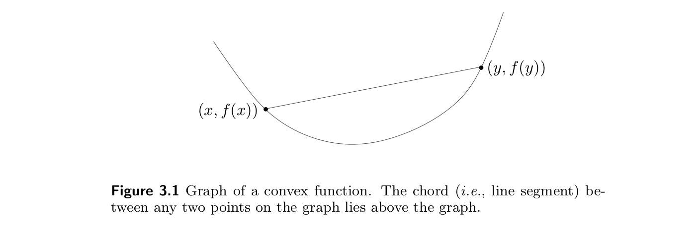
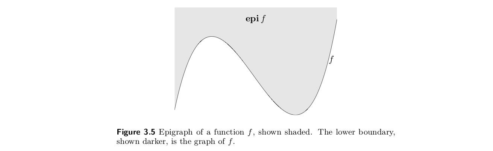
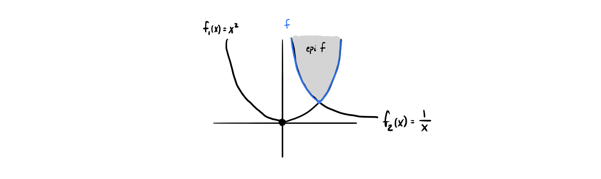
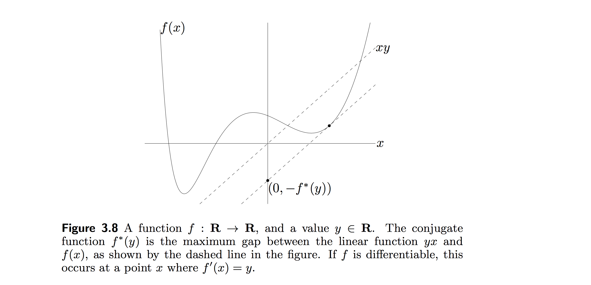

3. Convex functions¶
[1]:
import numpy as np
import matplotlib.pyplot as plt
3.1. Basic properties and definitions¶
A function \(f: \mathbf{R}^{n}\to \mathbf{R}^{}\) is convex if \(\mathbf{dom} f\) is a convex set, and
\begin{equation} f(\theta x + (1-\theta) y) \leq \theta f(x) + (1-\theta) f(y) \label{eq:convexity_def} \end{equation}
for all \(x,y \in \mathbf{dom} f\), \(0\leq \theta\leq 1\).
The mental picture for this is:

A function doesn’t have to be bowl-shaped to be convex, but it must have positive curvature.
\(f\) is concave if \(-f\) if convex.
Examples on \(\mathbf{R}\)
“The question as to whether or not a function on \(\mathbf{R}\) is convex is a non-issue. Here’s how you check: you draw it and you use your eyeballs to see if it curves up. There’s really no issue there.” - Stephen Boyd
Examples on \(\mathbf{R}^n\) and \(\mathbf{R}^{n\times m}\)
Norms
Every norm on \(\mathbf{R}^n\) is convex.
Restriction of a convex function to a line
A function \(f:\mathbf{R}^{n}\to \mathbf{R}^{}\) is convex iff and only if the function \(g:\mathbf{R}^{}\to \mathbf{R}^{}\),
\begin{equation} g(t) = f(x + tv),\qquad \mathbf{dom}\,g = \left\{t\mid x + tv \in\mathbf{dom} f\right\} \end{equation}
is convex (in \(t\)) for any \(x\in \mathbf{dom} f\), \(v\in \mathbf{R}^{n}\).
This means we can check the convexity of \(f\) by checking the convexity of one variable at a time. The only hitch is that there are infinite such lines. But if we can show that the function is convex on an arbitrary line, then we’re done.
3.1.1. Extended-value extensions¶
The extended-value extension \(\tilde{f}\) of \(f\) is
\begin{equation} \tilde{f}(x) = \begin{cases} f(x) & x \in \mathbf{dom} f\\ \infty & x \notin \mathbf{dom} f \end{cases} \end{equation}
For accounting purposes, it’s often useful to work with the extended-value extension of a function rather than the function itself. \(\tilde{f}\) is defined on the whole space, so we don’t need to worry about domain restriction.
This can also simplify notation: for example, instead of writing out the full conditions for convexity in equation (\ref{eq:convexity_def}), where we demand that \(\mathbf{dom} f\) is a convex set and \(x,y\in\mathbf{dom} f\), we can instead write
\begin{equation} 0\leq\theta\leq1 \implies \tilde{f}(\theta x + (1-\theta)y) \leq \theta \tilde{f}(x) +(1-\theta)\tilde{f}(y) \end{equation}
for any \(x,y\).
Similarly, to express the pointwise sum \(f\) of two functions \(f_1\) and \(f_2\), we would have to write that \(f = f_1 + f_2\) is the pointwise sum function with the domain \(\mathbf{dom}f = \mathbf{dom} f_1 \cap \mathbf{dom} f_2\). Using the extended-value extension, we can simply say that for any \(x\),
\begin{equation} \tilde{f}(x) = \tilde{f}_1(x) + \tilde{f}_2(x). \end{equation}
3.1.2. First-order conditions¶
There’s this idea that if \(f\) differentiable (i.e., its gradient \(\nabla f\) exists at each point in \(\mathbf{dom} f\), which is open), then \(f\) is convex if and and only if
its domain is convex
\(f(y) \geq f(x) + [\nabla f(x)]^T(y-x)\) for all \(x,y\in\text{dom}(f)\)
The first point is the interpretation of \(f(x) + [\nabla f(x)]^T(y-x)\). To understand this, fix \(x\),
[2]:
def f(x): return x**2
def grad_f(x): return 2*x
x0 = -0.25
x = np.linspace(-1, 1, 50)
y = np.linspace(-1, 1, 10)
plt.plot(x, f(x),label=r'$f(x)$')
plt.scatter(x0, f(x0), c='k', label=r'$x_0$')
plt.plot(y, f(x0) + grad_f(x0)*(y-x0), '-o',
label=r'$f(x_0) + [\nabla f(x_0)]^T(y-x_0)$')
plt.scatter(y, f(y), label=r'$f(y)$', c='orange')
plt.legend()
plt.show()
we see that - the inequality is respected - that \(f(x) + [\nabla f(x)]^T(y-x)\) is an affine function in \(y\) for any given \(x\), which specifies the linear Taylor approximation to the function at the point \(x\).
In higher dimensions, this says that the plane tangent to the function lies below the function.
3.1.3. Second-order conditions¶
We now assume that \(f\) is twice differentiable, i.e., its Hessian or second derivative matrix \(\nabla^2 f\) exists on each point in \(\mathbf{dom} f\), which is open.
If these conditions are met, then \(f\) is convex if and only if
\(\mathbf{dom} f\) is convex
\(\nabla^2 f \succeq 0\) for all \(x\in \mathbf{dom} f\).
Where the Hessian matrix \(H\) is defined as
\begin{equation} H_{ij}=\nabla^2 f(x)_{ij} = \frac{\partial^2 f(x) }{\partial x_i \partial x_j}, \qquad i,j = 1,\ldots,n \end{equation}
not to be confused with the Laplacian operator \(\nabla \cdot \left( \nabla f(x) \right)\).
Remark
The condition that \(\mathbf{dom} f\) be convex cannot be dropped from the first or second order characterizations of convexity. For example, consider the function \(f(x) = 1/x^2\) with \(\mathbf{dom} f = \left\{x \in \mathbf{R}^{}\mid x\neq 0\right\}\) satisfies \(f^{\prime\prime}(x) > 0\) for all \(x\in \mathbf{dom} f\), but is not a convex function.
Generally, checking convexity this way is to be avoided, as it can be quite complicated, especially for vector-valued function (see exercises).
Remark
If a function is convex in each component, the diagonals of the Hessian will be positive. However, this says nothing about the convexity of the function in general (which has to do with the off diagonals). We have to check convexity over every line, not just in each component.
3.1.4. Useful examples to remember¶
3.1.5. Sublevel sets¶
The \(\alpha\)-sublevel set of \(f:\mathbf{R}^{n}\to\mathbf{R}^{}\):
\begin{equation} C_\alpha = \left\{x \in \mathbf{dom} f \mid f(x) \leq \alpha\right\}. \end{equation}
Note that sublevel sets are subsets of the domain, not the function.
Sublevel sets of a convex function are convex, for any value of \(\alpha\). The proof follows from the definition of convexity.
If \(x,y\in C_\alpha\), then both \(f(x)\) and \(f(y)\) are below \(\alpha\). Since \(f\) is convex, \(f(\theta x + (1-\theta)y) \leq \alpha\) as well and therefore \(\theta x + (1-\theta)y\in C_a\), proving convexity.
The mental picture is:
The converse is false. A function can have all of its sublevel sets convex but not be a convex function. As a counterexample, take \(f(x) = e^{-x}\).
3.1.6. Epigraph¶
The graph of a function \(f:\mathbf{R}^{n}\to \mathbf{R}^{}\) is defined as
\begin{equation} \left\{(x,f(x)) \mid x\in \mathbf{dom} f\right\} \end{equation}
The epigraph of a function \(f:\mathbf{R}^{n}\to \mathbf{R}^{}\) is defined as
\begin{equation} \mathbf{epi} f = \left\{(x,t)\in \mathbf{R}^{n+1} \mid x\in\mathbf{dom} f,\, f(x) \leq t\right\}. \end{equation}
So the epigraph is the entire set above the graph. The mental picture is: 
\(f\) is convex if and only if \(\mathbf{epi} f\) is a convex set.
3.1.7. Jensen’s inequality and extensions¶
The basic inequality in equation (\ref{eq:convexity_def}) is:
\begin{equation} f(\theta x + (1-\theta)y) \leq \theta f(x) + (1-\theta) f(y) \end{equation}
Sometimes this is called Jensen’s inequality and it has tons of extensions. One generality is that if \(f\) is convex, then
\begin{equation} f\left(\mathbf{E}(z)\right) \leq \mathbf{E}f(z) \end{equation}
for any random variable \(z\).
3.2. Operations that preserve convexity¶
3.2.1. Nonnegative weighted sums¶
We can use some of the properties of convex sets to derive results about operations that preserve convexity of functions.
Scaling a function
Scaling a convex function \(f\) by \(w \geq 0\) preserves convexity. This should be easy to imagine, but the proof is quick:
\begin{equation} f \text{ convex } \implies w f(\theta x + (1-\theta)y) \leq w\theta f(x) + w(1-\theta) f(y) \end{equation}
which suffices to show the convexity of \(wf\).
Of course, the “nonnegative” part is vital. For example, scaling by -1 would make the function concave, and would not preserve convexity. Algebraically, in the proof, scaling by -1 would flip the inequality.
Sum of two functions
If two functions \(f_1\) and \(f_2\) are convex, then so is their sum.
We will show this a few ways. The first way is simply by applying the definition of function convexity directly. Let \(f_1,\) and \(f_2\) be arbitrary convex functions and arbitrarily choose \(x,y\in \mathbf{dom}f_1, f_2\) and \(\theta \in [0,1]\). Let \(g = f_1 + f_2\), then
\begin{align} f_1(\theta x + (1-\theta)y) &\leq \theta f_1(x) + (1-\theta)f_1(y) \\ f_2(\theta x + (1-\theta)y) &\leq \theta f_2(x) + (1-\theta)f_2(y) \\ \implies g(\theta x + (1-\theta)y) & \leq \theta g(x) + (1-\theta) g(y) \end{align}
which shows convexity directly, since it’s the same as writing
\begin{equation} (f_1 + f_2)(\theta x + (1-\theta)y) = \theta(f_1 + f_2)(x) + (1-\theta)(f_1+f_2)(y) \end{equation}
While the proof is certainly short, it doesn’t really provide any insight into the geometric reason why convexity is preserved. The visual reason is for why the proof works is that in order to break convexity of the sum, you would have to violate convexity for at least \(f_1\) or \(f_2\).
[3]:
fig, axes = plt.subplots(1,2,figsize=(8,4))
x = np.linspace(-2,2,200)
f1 = x**2 + 1
f2 = 2*np.abs(x - 1) +1
f3 = np.sin(np.pi*x)
for ax, _f in zip(axes, [f2, f3]):
ax.plot(x, f1, label=r'$f_1$');ax.plot(x, _f, label=r'$f_2$')
ax.plot(x, f1+ _f, 'k--', label=r'$f_1 + f_2$')
ax.legend();
axes[0].set_title('Sum of convex functions');
axes[1].set_title('Sum of non-convex functions');
plt.show()
Epigraph arguments for scaling and sums
The geometric arguments is more mentally convincing and easy to remember than the proofs. Indeed, there is a more elegant argument that proves each claim using an epigraph argument.
We know that a function is convex if and only if its epigraph is a convex set. We also know that the image of any convex set under an affine transformation is convex.
So for scaling:
\begin{equation} \mathbf{epi}(wf) = \begin{bmatrix} I & 0 \\ 0 & w \end{bmatrix} \mathbf{epi}(f) = \begin{bmatrix} I & 0 \\ 0 & w \end{bmatrix} \begin{bmatrix} x \\ t \mid t \geq wf(x) \end{bmatrix} \end{equation}
Since we wrote \(\mathbf{epi}(wf)\) as an affine transformation of a convex set, it’s convex and hence so is \(wf\).
For sums: \begin{equation} \mathbf{epi}(f_1 + f_2) = \begin{bmatrix} I & 0 & 0 \\ 0 & 1 & 1 \end{bmatrix} \begin{bmatrix} x \\ t \mid t \geq f_1(x) \\ t \mid t \geq f_2(x) \end{bmatrix}. = \begin{bmatrix} I & 0 \\ 0 & w \end{bmatrix} \left\{\mathbf{epi}f \times \left\{t| t\geq f_2(x)\right\}\right\} \end{equation}
where the set \(\left\{\mathbf{epi}f \times \left\{t| t\geq f_2(x)\right\}\right\}\) is convex since it is the tensor product of two convex sets.
Result for nonnegative weighted sums of functions
Since we have shown that applying nonnegative scaling and sums to convex functions preserves convexity, it should be clear that we can iteratively apply the scaling and sum procedures to conclude that any sum of weighted convex functions (where weights are nonnegative) will be a convex function:
\begin{equation} f = w_1 f_1 + \ldots + w_n f_n \;\;\text{ is convex, } \qquad \text{ for } w_i \geq 0,\, f_i \text{ convex } \end{equation}
Generalization to integrals
We can take this result and apply it to an infinite sum of functions, giving a result for general integrals.
If \(f(x,y)\) is convex in \(x\) for each \(y \in \mathcal{A}\), and \(w(y) \geq 0\) for each \(y\in \mathcal{A}\), then the funtion \(g(x)\) defined as
\begin{equation} g(x) = \int_{A}^{} w(y) f(x,y) \,dy \end{equation}
is convex in \(x\) (provided that the integral exists).
We can see how the threads of logic from the earlier conclusions are used to build this result.
The key to understanding this statement to recognize that \(y\) is just a dummy variable that indexes the sum. Note that discretely, we would replace the integration over \(y\) with the sum
\begin{equation} g(x) = \sum_{y=1}^{n} w_y f_y(x) \qquad \text{ (discrete analogue) } \end{equation}
from which we can see
\(w(y)\) must be nonnegative over the entire region of integration \(\mathcal{A}\) to not to flip a convex function into a concave one.
\(f(x,y)\) must be convex in \(x\) for each \(y\in\mathcal{A}\) just like we demanded that every function \(f_y(x)\) in the sum must be convex.
3.2.2. Composition with affine mapping¶
Intuitively, it should make sense that any affine transformation of the domain of a convex function should not affect its convexity. Rotating and scaling \(\mathbf{dom} f\) should not affect the “bowl shapeness” of \(\mathbf{epi} f\) sitting “above”.
To illustrate this point, we take the specific example of
\begin{equation} f(x,y) = x^2 + 2y^2 \end{equation}
And the composition with the matrix \(A\)
\begin{equation} \begin{bmatrix} 0 & 1 \\ -1 & 1 \end{bmatrix} \end{equation}
to form the affine composition \begin{equation} g = f(Ax) = f(y, -x + y) = 2x^2 + 3y^2 -4xy \end{equation}
[4]:
f = lambda x,y: x**2 + 2*y**2
f2 = lambda x,y: 3*y**2 + 2*x**2 - 4*x*y
x = np.linspace(-1,1,100)
X,Y = np.meshgrid(x,x)
Z = f(X,Y)
[5]:
A = np.array([[0, 1],
[-1, 1]])
b = np.array([0,0])
[6]:
# compute the transform of the domain
XX = np.stack(np.meshgrid(x,x))
trans = np.einsum('ij,jkl', A, XX) + b[:,np.newaxis, np.newaxis]
tX, tY = trans[0,...], trans[1,...]
tZ = f(tX, tY)
[7]:
fig, ax = plt.subplots(1,3, figsize=(9, 3))
ax[0].set_title(r'$f(x)$');
ax[0].contourf(X, Y, Z, levels=np.linspace(0,3,10))
ax[1].set_title(r'transformed dom $Ax$')
ax[1].set_xlim([-1,1]); ax[1].set_ylim([-1,1])
ax[1].contourf(tX, tY, f(tX, tY), levels=np.linspace(0,3,10))
ax[2].set_title(r'composition $f(Ax)$')
ax[2].contourf(X, Y, f2(X,Y), levels=np.linspace(0,9,10))
plt.show()
This is the intuition for the following result
Composition with an affine mapping preserves convexity
Let \(f:\mathbf{R}^{n}\to R\), \(A\in \mathbf{R}^{n\times m}\), and \(b\in \mathbf{R}^{n}\). Define the affine composition
\begin{equation} g(x) = f(Ax + b), \qquad \mathbf{dom}\,g = \left\{x \mid Ax + b \in \mathbf{dom} f\right\}. \end{equation}
Then if \(f\) is convex, so is \(g\).
Examples
Log barrier for linear inequalities
\begin{equation} f(x) = - \sum_{i=1}^{m} \log\left(b_i - a_i^T x\right), \qquad \mathbf{dom} f = \left\{x \mid a_i^T x < b_i,\, i=i,\ldots,m\right\} \end{equation}
Is convex, because the function
\begin{equation} \phi(z) = \sum_i - \log(z_i) \end{equation}
is a convex function, since \(log(z)\) is concave and sums of convex functions are convex. Then \(f(x)\) is the convex function \(\phi\)(z) precomposed with an affine function \(b_i - a_i^T x\) and hence is convex also.
3.2.3. Pointwise maximum¶
Result If two functions \(f_1\) and \(f_2\) are convex, then their pointwise maximum
\begin{equation} f(x) = \max\left\{f_1(x),\, f_2(x)\right\} \end{equation}
with \(\mathbf{dom}f = \mathbf{dom}f_1 \cap \mathbf{dom} f_2\) is also convex.
Mental pictures
As with nonnegative weighted sums, this idea is easier for me to think about graphically rather than algebraically.

The figure above shows a good mental image of the pointwise maximum idea. We take the pointwise maximum of \(f_1=x^2\) and \(f_2 = 1/x\). The shaded region is the epigraph of the pointwise maximum, and we see that the domain of the pointwise max has been restricted to only \(\mathbf{R}^{}_+\).
We can also see why we need both to be convex. Clearly, if the greater function is not convex, it will violate the convexity of the pointwise max.
Proof
In this section we write out the proof, which is pretty straightforward. Take \(f_1,f_2\) convex, \(f=\max\left\{f_1,f_2\right\}\), and \(x,y\in \mathbf{dom} f\).
\begin{align} f(\theta x + (1-\theta)y &= \max\left\{f_1(\theta x + (1-\theta)y), f_2(\theta x + (1-\theta) y)\right\} \\ &\leq \max\left\{\theta f_1(x) + (1-\theta)f_1(y),\, \theta f_2(x) + (1-\theta)f_2(y) \right\} \\ &\leq \theta \max\left\{f_1(x), f_2(x)\right\} + (1-\theta) \max\left\{f_1(y), f_2(y)\right\} \\ &= \theta f(x) + (1-\theta) f(y) \end{align}
Extensions
Since we can successively take pointwise maxima, this result holds for an arbtrary number of functions. If \(f_1,\ldots,f_m\) are convex, then their pointwise maximum
\begin{equation} f(x) = \max \left\{f_1(x),\ldots,f_m(x)\right\} \end{equation}
is also convex.
Examples
Max of Linear Functions
This example is sort of lame, but since hyperplanes are convex (indeed, affine) functions, taking the pointwise maximum of a set of linear functions results in a piecewise, linear convex function (see diagram).
It’s not an incredibly profound statement, since it’s really the pointwise maximum function that’s ensuring convexity, but it is nonetheless true that the function
\begin{equation} f(x) = \max\left\{a_1^T x + b_1,\ldots, a_L^T x + b_L \right\} \end{equation}
defines a piecewise-linear convex function (with \(L\) or fewer regions).
Sum of \(r\) largest components
For a vector \(x\in\mathbf{R}^{n}\), the function that sums the \(r\) largest components (take \(x\) to be sorted largest-to-smalles without loss of generality):
\begin{equation} f(x) = \sum_{i=1}^{r} x_{[i]} \end{equation}
is a convex function.
It is a convex function because if represents the pointwise maximum of all the functions that sum \(r\) distinct components of \(x\), that is
\begin{equation} f(x) = \max\left\{x_{i_1} + \ldots + x_{i_r} \mid 1\leq i_1 < i_2 <\ldots < i_r \leq n\right\} \end{equation}
Which is another way of saying of all the \(n!/(r!(n-r)!)\) ways to sum \(r\) components of \(x\), \(f(x)\) is their pointwise maximum, hence convex.
This example is interesting because although \(f(x)\) is non-differentiable and non-smooth in terms of \(x\) but is nonetheless convex in \(x\).
3.2.4. Pointwise supremum¶
We can generalize the result that the pointwise maximum \(f\) over a set of \(m\) convex functions \(f_1,\ldots f_m\) is convex to the pointwise supremum over an infinite set of convex functions.
The generalized result:
If, for each \(y\in A\), a function \(f(x,y)\) is convex in \(x\), then the function
\begin{equation} g(x) = \sup_{y\in A} f(x,y) \end{equation}
is convex in \(x\).
The way to think about this is a set of convex functions parametrized by a continuous value \(y\). We have to be a bit careful about the domain, just as we did for the pointwise max of functions which might not share a common domain. Here we make sure that he domain of \(f\) contains only \(x,y\) pairs which make sense.
\begin{equation} \mathbf{dom}\, g = \left\{x \mid (x,y)\in \mathbf{dom}f \text{ for all } y\in A,\, \sup_{y\in A} f(x,y) < \infty\right\} \end{equation}
Take \(g(x) = \sup_{y\in[0,1]} x/y\)
Proof
We prove the claim using an epigraph argument. The epigraph of \(g\) can be written as an intersection of epigraphs.
\begin{equation} \mathbf{epi}\, g = \bigcap_{y\in A} \mathbf{epi} f(\cdot,y). \end{equation}
and since any intersection of convex sets is convex, so is \(\mathbf{epi}\, g\), which is sufficient to show convexity.
Examples
Distance to the farthest point of a set
Let \(C \subseteq \mathbf{R}^{n}\). The distance in any norm to the farthest point of \(C\) can be written as
\begin{equation} f(x) = \sup_{y\in C} \left\Vert x - y\right\Vert \end{equation}
This function is convex, because for any fixed \(y\in C\), \(\left\Vert x-y_0\right\Vert\) is convex in \(x\) (since all norms are convex). So we can take the supremum over all choices of \(y\in C\) and use the pointwise supremum result to assert convexity.
Maximum eigenvalue of a symmetric matrix
The function \(f(X) = \lambda_{max}(X)\), with \(\mathbf{dom} f = S^m\), is convex.
To see this, we express \(f\) as
\begin{equation} f(X) = \sup\left\{y^T X y \mid \;\; \left\Vert y\right\Vert_{2} = 1 \right\} \end{equation}
In my opinion, this isn’t a great example because it’s sort of an obscure linear algebra fact that the largest eigenvalue can be written this way, but sure, if you see it, you’re done.
Converse: representation of convex function as pointwise supremum of affine functions
We’ve seen arguments for convexity by expressing the function as the pointwise supremum of convex functions. We make a small remark about going in reverse. Almost every convex function (except for a technical condition explained in Boyd, need more details) can be expressed as a pointwise supremum of a family of affine functions. The proof is sort of long, but boils down to the following idea:
Every convex function has an epigraph which is a convex set. Every convex set has a supporting hyperplane at every boundary point. So we can represent the convex function by taking the pointwise supremum over all affine global underestimators (see illustration).
3.2.5. Composition¶
3.2.5.1. Scalar composition¶
The intuitive way to think about composition is to reduce it to the scalar case and look at the second derivative using the chain rule. Let \(f(x) = h(g(x))\) be a scalar functional composition.
\begin{align} f^\prime(x) &= h^\prime(g(x)) g^\prime(x) \\ f^{\prime\prime}(x) &= h^{\prime\prime}(g(x)) \left[g^\prime(x)\right]^2 + h^\prime(g(x)) g^{\prime\prime}(x) \end{align}
Then the question is, what needs to be true of \(h(x)\) and \(g(x)\) in order for \(f(x)\) to be convex. If \(h(x)\) and \(g(x)\) are convex, then
\begin{equation} f^{\prime\prime}(x) = \underbrace{h^{\prime\prime}(g(x))}_{\geq 0 \,\text{ since } h \text{ convex}} \underbrace{\left[g^\prime(x)\right]^2 }_{\geq 0 } + \underbrace{h^\prime(g(x)) }_{?} \underbrace{g^{\prime\prime}(x)}_{\geq 0 \text{ since } g \text { convex}} \end{equation}
So to make $f^{\prime\prime}:nbsphinx-math:geq `0 $ (and hence :math:`f convex), we need $h^{\prime}(g(x)) \geq `0 $, that is, we need :math:`h^\prime(\cdot) \geq 0 or \(h\) to be nondecreasing. This gives us the final rule:
a nondecreasing convex function of a convex function is convex.
Now it turns out that these types of composition rules hold for non-differentiable, non-scalar functions \(g,h\). But the way to think about or rederive the rules is to re-write out the scalar case and consider the signs.
Example: \(\exp g(x)\)
The function \(\exp g(x)\) is convex if \(g(x)\) is convex. This says that the exponential function preserved positive curvature; if a function curves up, the exponential of the function also curves up.
3.2.5.2. An important subtlety about the general rule¶
3.2.5.3. Vector-valued composition¶
The vector-valued composition \(f\) of \(g:\mathbf{R}^{n}\to\mathbf{R}^{k}\) and \(h:\mathbf{R}^{k}\to R\), that is,
\begin{equation} f(x) = h\left(g_1(x), g_2(x),\ldots, g_k(x)\right) \end{equation}
The possibilities for these types of functions just explode, because now you can have functions \(g_i(x)\) either increasing or decreasing in each argument, and they can be convex or non-convex in each argument. However, we can still apply rules similar to the scalar composition case by looking at the behavior of \(h\) in each argument (\(g_i\)).
By in each argument I mean that you fix all components of \(h\) except one. Then you increase the value of that argument; if the value of \(h\) doesn’t go down, then \(h\) is nondecreasing in that argument.
examples
Sum of convex functions
Max of convex function
3.2.6. Minimization¶
If \(f(x,y)\) is convex in \((x,y)\) and \(C\) is a convex set, then
\begin{equation} g(x) = \inf_{y \in C} f(x,y) \end{equation}
is convex.
Contrast this to maximization, which had a far less strict set of conditions for convexity.
3.3. The conjugate function¶
Let \(f\colon \mathbf{R}^{n}\to \mathbf{R}^{}\). The function defined as
\begin{equation} f^*(y) = \sup_{x\in\mathbf{dom} f} \left(y^T x - f(x)\right) \end{equation}
is called the conjugate of the function \(f\).
The domain of the conjugate function consists of \(y\in\mathbf{R}^{n}\) for which the supremum is finite, i.e., where \(y^Tx - f(x)\) is bounded above on \(\mathbf{dom} f\).
The mental picture is: 
The conjugate function is convex, since it is the pointwise supremum of a family of convex (affine) functions of \(y\). This is true whether or not \(f\) is convex.
3.4. Quasiconvex functions¶
3.5. Log-concave and log-convex functions¶
3.6. Convexity with respect to generalized inequalities¶
3.7. Exercises¶
[ ]: